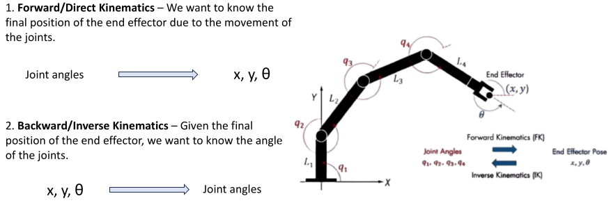
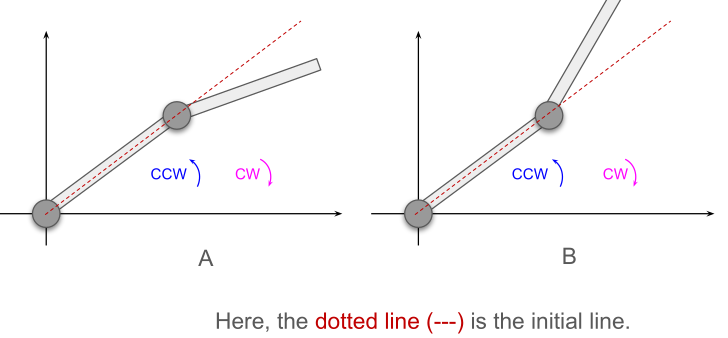
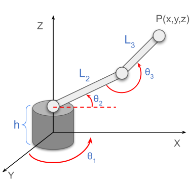

Chapter 2 – Forward Kinematics using Trigonometry¶
Forward kinematics answers a direct and practical question:
If the joint angles are known, where will the end-effector be?
In other words, forward kinematics maps joint variables to position.
For a robot arm, this means:
- Input: link lengths and joint angles
- Output: end-effector position such as \(P(x,y)\)
1. Kinematics in Simple Words¶
Kinematics is the study of motion without discussing the forces that cause the motion.
In robotics, kinematics tells us how the motion of joints changes the position of the end-effector.
Example¶
If a robot arm rotates its joints by certain angles, the hand of the robot moves to a new location.
Forward kinematics tells us exactly where that hand goes.
2. Forward Kinematics vs Inverse Kinematics¶

- Forward Kinematics (FK): joint angles \(\rightarrow\) end-effector position
- Inverse Kinematics (IK): end-effector position \(\rightarrow\) joint angles
Why this example fits¶
In class, when we are given angles and asked to compute \(x\) and \(y\), that is forward kinematics.
If instead we are given \(x\) and \(y\) and asked to find the angles, that becomes inverse kinematics.
3. Before Starting FK: Angle Sign Convention¶

Before writing any FK equation, we must define the angle direction correctly.
Rule¶
- Counter-clockwise (CCW) angle = positive
- Clockwise (CW) angle = negative
Why this matters¶
Trigonometric equations depend on angle sign.
If we use the wrong sign convention, the final position of the robot will also be wrong.
Example¶
If a link rotates \(30^\circ\) counter-clockwise from the positive x-axis, then:
If it rotates \(30^\circ\) clockwise, then:
Why this example fits¶
Both angles have the same magnitude, but they point in different directions.
So the endpoint coordinates will also be different.
4. 3R Planar Robot Setup¶

We consider a 3R planar robot:
- \(L_1, L_2, L_3\) = link lengths
- \(\theta_1, \theta_2, \theta_3\) = revolute joint angles
- Motion is restricted to the XY-plane
Important note¶
- \(\theta_1\) is measured from the global x-axis
- \(\theta_2\) is measured relative to link 1
- \(\theta_3\) is measured relative to link 2
This is why FK becomes a little more careful than basic geometry.
5. Start from the Simplest Case: Single Link¶
Consider one link of length \(L_1\) making angle \(\theta_1\) with the x-axis.
The endpoint is:
Why this works¶
This is just basic trigonometry:
- horizontal part = adjacent side = \(L_1 \cos \theta_1\)
- vertical part = opposite side = \(L_1 \sin \theta_1\)
Example¶
If:
then:
So the endpoint is:
Why this example fits¶
A single-link robot is the foundation of all multi-link FK.
If students understand one link, they can understand multiple links by adding contributions.
6. Two-Link Planar Robot¶
Now add a second link \(L_2\).
At first glance, we may think:
But this is not fully correct if \(\theta_2\) is measured relative to link 1.
We need the absolute orientation of the second link with respect to the global x-axis.
From the lecture geometry:
So the correct FK becomes:
Why this is needed¶
The second joint angle is not measured from the global x-axis.
It is measured from the previous link, so we must convert it into a global direction first.
Example idea¶
Think of link 1 as changing the “base direction” of link 2.
So link 2’s motion is influenced by both \(\theta_1\) and \(\theta_2\).
7. Three-Link Planar Robot¶
Now add the third revolute joint.
The end-effector position becomes:
Meaning of this equation¶
Each link contributes one part to the final \(x\) and \(y\):
- link 1 contributes from \(\theta_1\)
- link 2 contributes after adjusting its angle relative to link 1
- link 3 contributes after adjusting its angle relative to links 1 and 2
So FK is basically:
final position = sum of all link contributions
8. Cleaner Extension Form¶
In the slides, a cleaner form is also shown when the effective angle bookkeeping is simplified:
Why students should notice this¶
This form is easier to read and easier to use in numerical problems.
It also teaches an important lesson:
FK equations depend on how the angles are defined.
So always check the angle convention before solving.
9. Step-by-Step FK Calculation Strategy¶
When solving a forward kinematics problem, follow these steps:
Step 1¶
Write down all known values: - link lengths - joint angles
Step 2¶
Check the angle sign convention - CCW positive - CW negative
Step 3¶
Identify whether each angle is measured: - from the global axis, or - from the previous link
Step 4¶
Choose the correct FK equation
Step 5¶
Substitute values carefully
Step 6¶
Compute final \(x\) and \(y\)
10. Why Forward Kinematics is Important¶
Forward kinematics is the foundation of robot motion analysis.
It is used in: - robot arm positioning - simulation - path planning - motion visualization - control systems
Example¶
If a factory robot must place an object at a certain point, the controller first needs to know:
“If I rotate my joints like this, where will my hand go?”
That is exactly a forward kinematics question.
11. Summary¶
Forward kinematics means:
Given the joint angles, find the position of the end-effector.
For a planar manipulator:
- each link adds its own x- and y-contribution
- joint definitions matter
- angle signs matter
- multi-link FK is built from basic trigonometry
Single-link FK is simple.
Two-link and three-link FK require careful angle interpretation.
That is why FK using pure trigonometry is educational, but later we move to a more systematic method using DH parameters.
Practice Problems¶
Numerical 1¶
A single-link planar robot has:
- \(L_1 = 8\)
- \(\theta_1 = 60^\circ\)
Find the endpoint position \(P(x,y)\).
Solution¶
Using:
So,
Answer¶
Numerical 2¶
For a 3R planar robot, use the simplified FK equation:
Given:
- \(L_1 = 4\)
- \(L_2 = 3\)
- \(L_3 = 2\)
- \(\theta_1 = 60^\circ\)
- \(\theta_2 = 30^\circ\)
- \(\theta_3 = 45^\circ\)
Find \(P(x,y)\).
Solution¶
First compute the combined angles:
Now,
And,
Answer¶
End of This Section¶
In the next part, we will study how to do the opposite problem:
Given the final position, how do we find the joint angles?
That problem is called Inverse Kinematics.